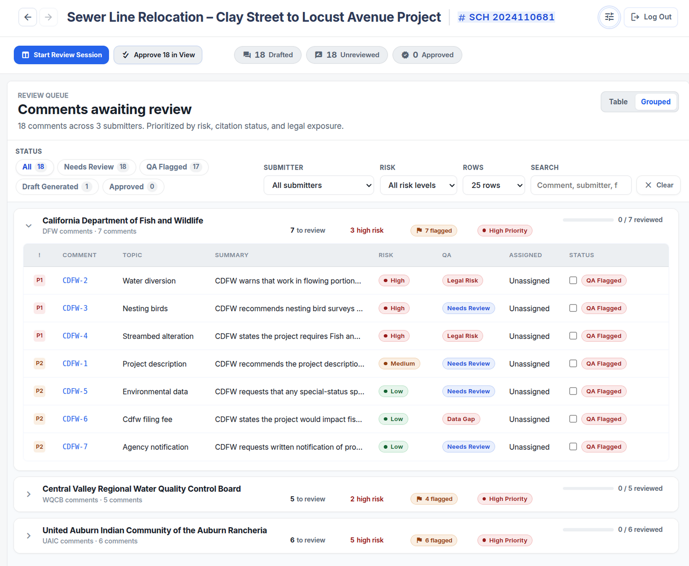
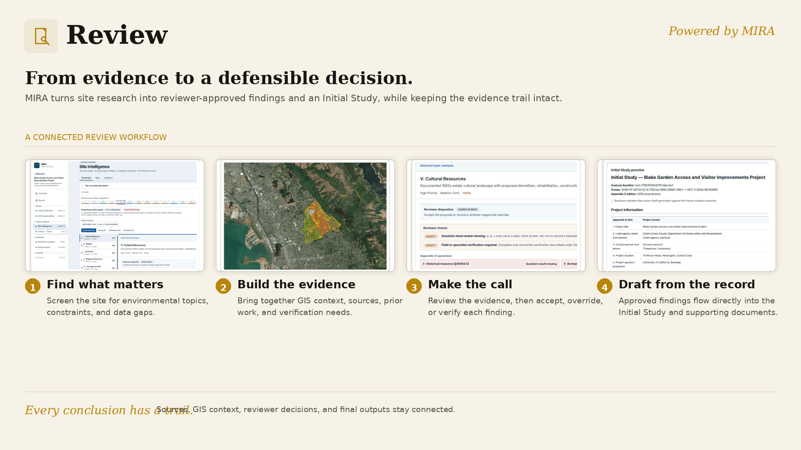
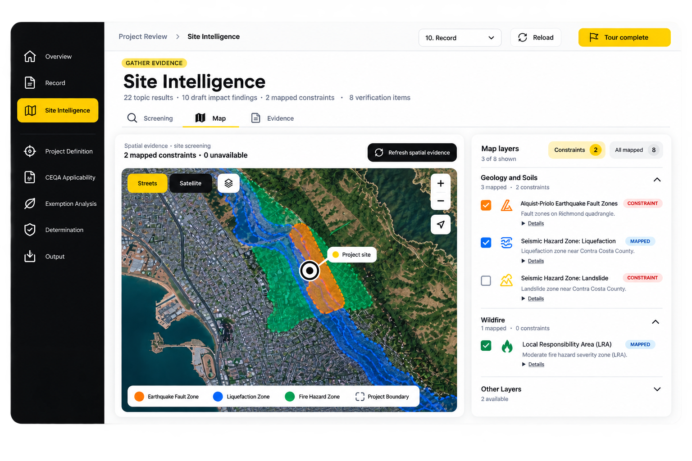

MIRA
Mapping Intake & Review AssistantA project description and an APN are all MIRA needs to surface concerns, likely petitioners, and mitigation strategies.
AI-NATIVE ENVIRONMENTAL REVIEW · CEQA & NEPA
Every project fact, citation, and revision in one connected record — built for the rigor environmental review demands, not around it.

Every module reads and writes to the same project record — no exports, no re-uploading, no drift between tools.
A project description and an APN are all MIRA needs to surface concerns, likely petitioners, and mitigation strategies.

Bracket, group, assign responsible parties and timelines, and generate defensible responses tied to the record.

Search statutes, guidance, and precedent in plain language — grounded in citation, not paraphrase.

Convert legacy environmental documents to accessible, screen-reader-ready formats without re-authoring.
The Mapping Intake & Review Assistant. Give it a project description and an APN, and MIRA identifies concerns, likely petitioners, and mitigation strategies, then carries the project through to a review-ready Initial Study.
Book Demo


Consultants and agencies work from the same connected record, from first draft to final determination.
Run every project on one platform: research, evidence, drafting, and comment response in a single connected record.
Explore for Consultants
Move projects through review with a defensible, traceable record, from applicability to determination.
Explore for Agencies
Move faster through complex environmental review without losing the context, traceability, or defensibility the work demands.
Shared intelligence layer. Every module connects to the same project facts, citations, evidence, and administrative record.
Mapping Intake & Review Assistant. From a project description and APN to concerns, petitioners, and mitigation strategies.
CEQA Automated Response Assistant. Bracket, group, assign, and draft defensible responses tied to the record.
Leverage public and private data to generate review-ready environmental reports.
Explore statutes, thresholds, and precedent through semantic search of the CEQA database.
Transform complex environmental documents into ADA-compliant, accessible formats.
Not a generic chatbot with a search box — a knowledge layer grounded in the specific record types environmental review actually runs on.
A project description and APN are all MIRA needs to identify concerns, likely petitioners, and mitigation strategies.
Leverage public and private data to generate review-ready environmental reports.
Bracket, group, assign responsible parties and timelines, and generate responses with CARA.
Arm approving agencies with the administrative record and monitor mitigation measures over time.
A typical EIR or IS process, compressed.
Billable hours reduced across the review cycle.
Surface evidence invisible to the human eye.
“Firms without these tools will be uncompetitive within 10 years.”
Brian HarringtonUCOP Planning
“I actually think the CARA responses are better than what a respected firm prepared.”
StantecPrincipal Planner
“This technology can easily reduce the time responding to comments by 70%.”
EPD SolutionsPrincipal Planner